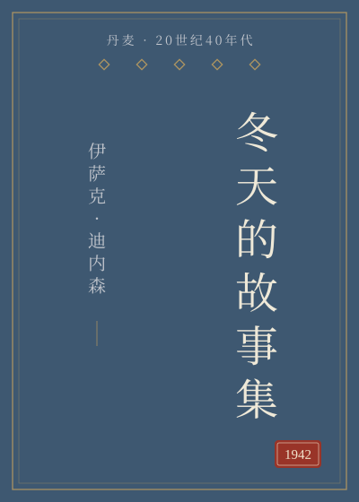
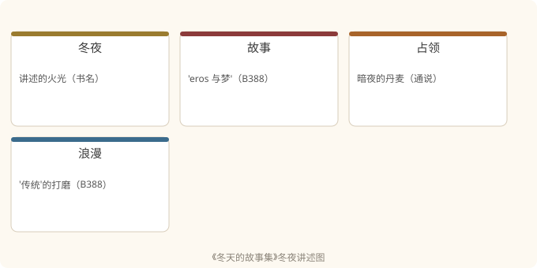

冬天的故事集
一、基本信息
| 作者 | 伊萨克·迪内森 |
|---|---|
| 成书/出版 | 1942年（Britannica B388：Winter's Tales (1942; Vinter-eventyr)） Isak Dinesen — Encyclopaedia Britannica（百科全书） |
| 国别/地区 | 丹麦 |
| 时代 | 近代 · 20世纪40年代 |
| 体裁 | 短篇小说集 |
| 语言 | 英语 |

《冬天的故事集》冬夜讲述图（主题·结构图）
二、创作背景
Britannica（B388）：Winter's Tales——作品列表（与 Seven Gothic Tales 1934 并列）。
Britannica（B388）：迪内森——'highly polished narratives in the Romantic tradition'——'eros and dreams'。
题材（通说待核）：二战期间出版的'冬夜'故事集。
三、内容脉络
（通说待核）'冬天的故事'：被占领丹麦的暗夜讲述。
（通说待核）'eros 与梦'的延续（B388）。
四、主要人物表
| 人物 | 身份 | 说明 |
|---|---|---|
| 众讲述者 | 框架人物 | （通说待核） |
五、主题与艺术特点
- '冬夜'的讲述（书名语境——通说待核）。
- 'eros 与梦'（B388）。
- 占领时代的寓言（通说待核）。
六、影响与评论
- Britannica：Winter's Tales (1942)（B388）。
Isak Dinesen — Encyclopaedia Britannica（百科全书） - Britannica：'Romantic tradition'（B388 交叉）。
Isak Dinesen — Encyclopaedia Britannica（百科全书）
七、阅读建议
难点
- '冬夜'的框架。
- 占领丹麦的语境（通说待核）。
- 《冬天的故事集》中译名（《冬天的故事》）待核。
- 英文原版。
迪内森中期；与《七篇哥特故事》对读。
八、待核实
- 篇目核对（B388未载）。
- 1942年出版细节待核。
- '占领丹麦'影射待核。